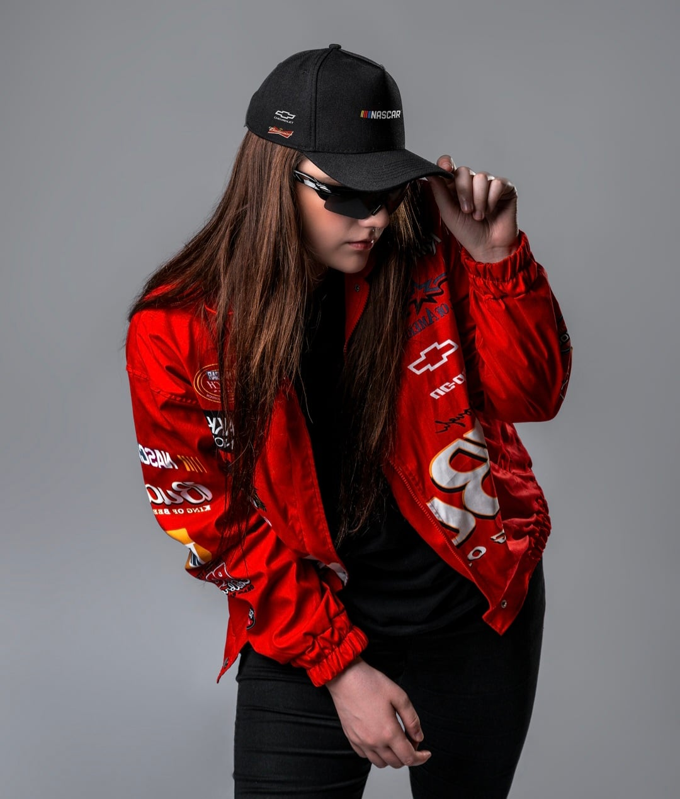
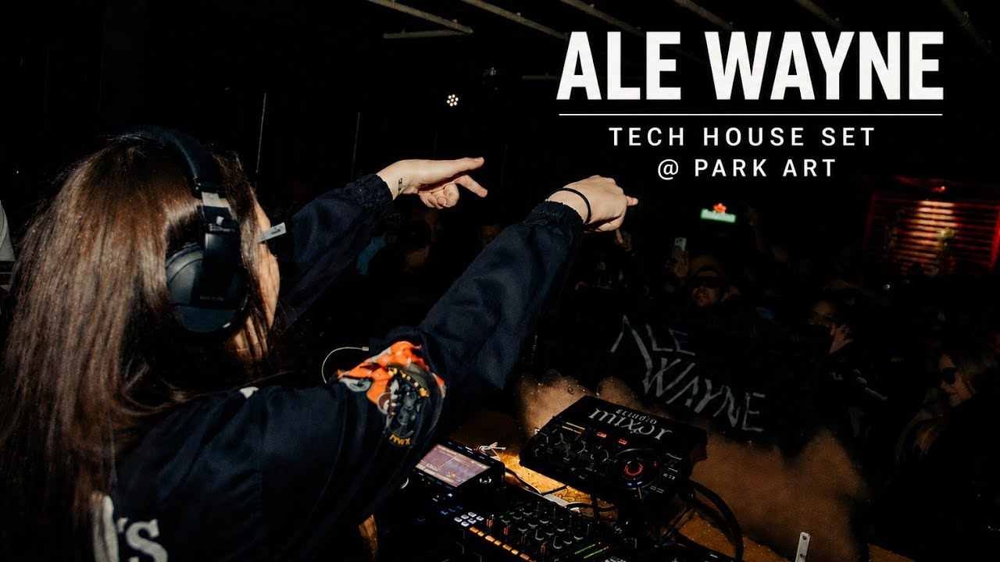
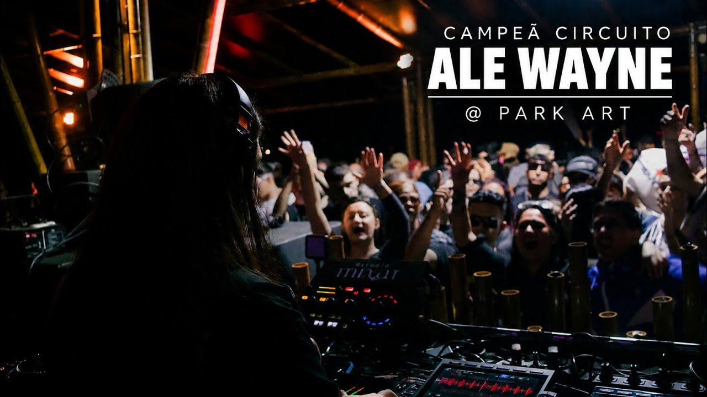
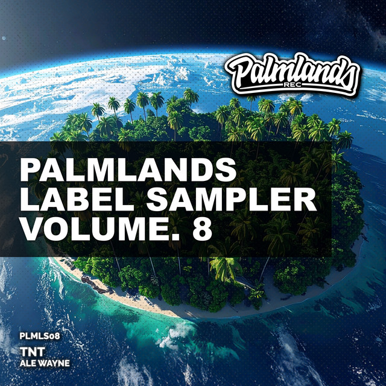
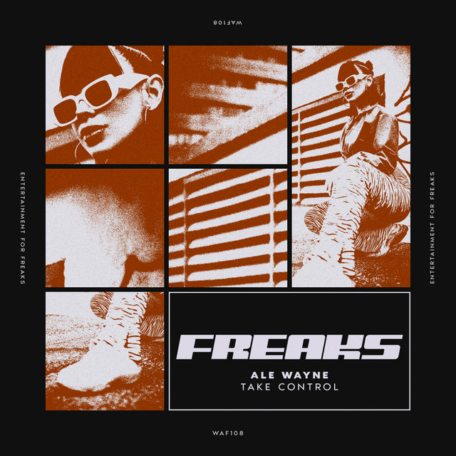
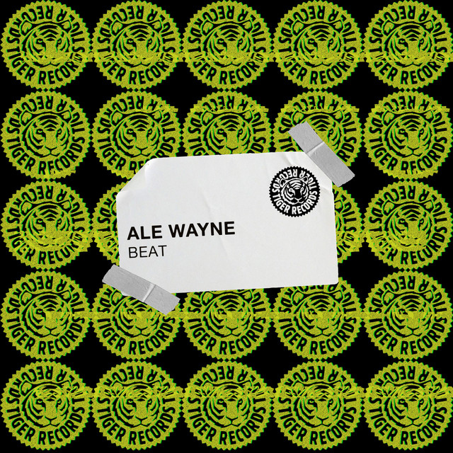
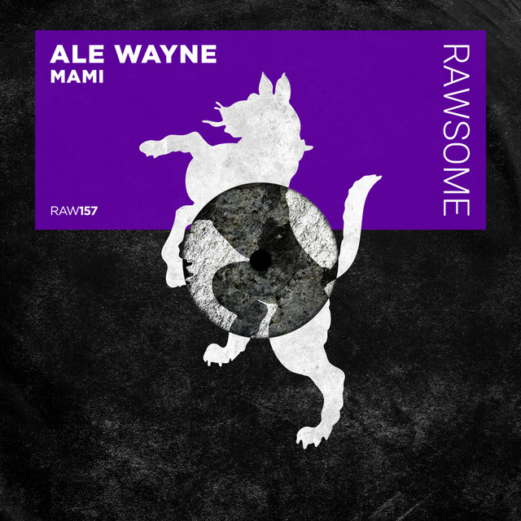
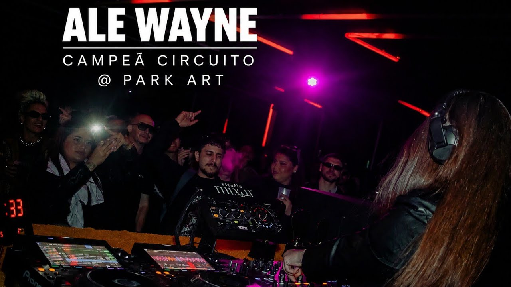
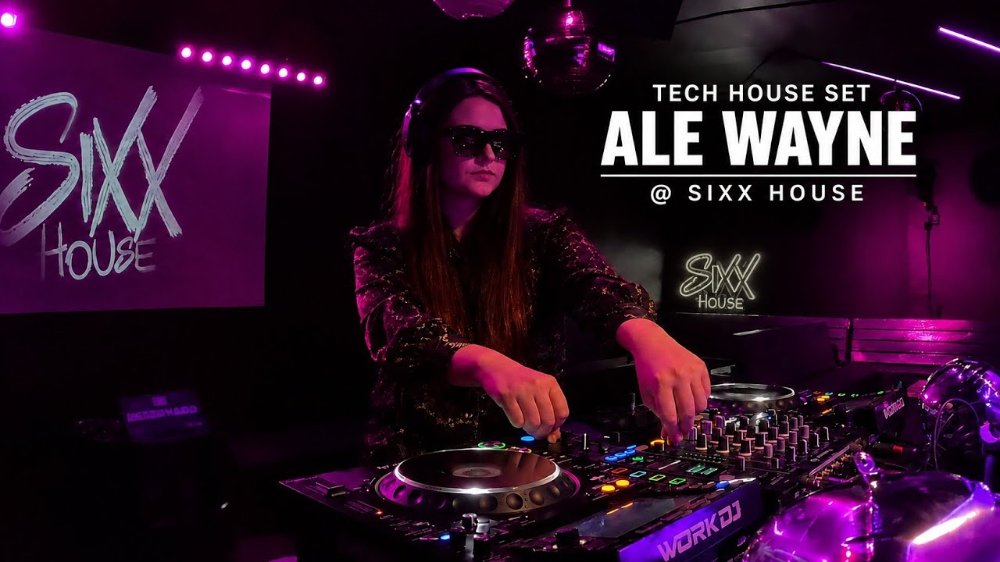
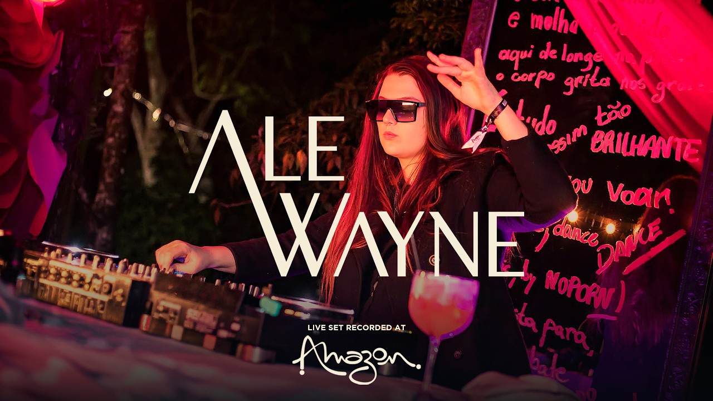

Curitiba · Balneário Camboriú · Brasil
Ale Wayne
DJ e produtora. A primeira mulher a vencer o CIRCUITO, o maior torneio de DJs do Brasil, no Park Art SuperClub. Tech house, bass house e techno com impacto, precisão e identidade própria.

CIRCUITO Park Art
Park ArtClub VibeDanghai ClubMeio CwbSpace ClubStand ByPedreira Paulo LeminskiLENDAAVila KatuHarmonic FestivalMagic Boom PVTField ClubSixHouseAmazon ClubSurreal ParkHouse Mag FestivalConca ClubFolianópolis AfterSanta ClubLife ClubP12 Jurerê1007 FloripaPosh ClubSafari BeachHeaven JurerêTerraza Music ParkMilk ClubStage Music ParkJivago Social ClubConstellationDesvioOutput POA414.PoaFremorGreen ValleyWarung Beach Club
Park ArtClub VibeDanghai ClubMeio CwbSpace ClubStand ByPedreira Paulo LeminskiLENDAAVila KatuHarmonic FestivalMagic Boom PVTField ClubSixHouseAmazon ClubSurreal ParkHouse Mag FestivalConca ClubFolianópolis AfterSanta ClubLife ClubP12 Jurerê1007 FloripaPosh ClubSafari BeachHeaven JurerêTerraza Music ParkMilk ClubStage Music ParkJivago Social ClubConstellationDesvioOutput POA414.PoaFremorGreen ValleyWarung Beach Club
Perfil profissional
Pista, engenharia e identidade.
Ale Wayne representa a fusão entre tech house, bass house e techno. Artista em ascensão que transforma a pista em espaço de impacto e assinatura sonora. Formada em Engenharia Bioquímica pela UFPR, leva método e precisão para o booth — e entrega para o público.
-
Campeã absoluta
Venceu eliminatória e final com pontuação máxima: melhor set dos jurados, mais votada pelo público e maior audiência do torneio.
-
Produtora em charts
“Diamonds on My Necklace” (com Ale7, Tiger Records) chegou ao #78 do Top 100 Bass House da Beatport.
-
Suporte internacional
Richie Hawtin, Shiba San, Joseph Capriati, Don Diablo, Paco Osuna, Ruben Mandolini, GiddiBangBang e Roxy Nox.


Maior torneio de DJs do Brasil
CIRCUITO Park Art.
História feita em Curitiba.
Promovido pelo Park Art SuperClub, o CIRCUITO é o maior torneio de DJs do país. Ale Wayne quebrou o recorde de venda de ingressos duas vezes e se tornou a primeira mulher campeã da competição — com pontuação perfeita na eliminatória e na grande final.
JuradosMelhor set da edição
PúblicoMais votada
CasaMaior audiência
BilheteriaRecorde 2×
Catálogo
Tracks em circulação.
Lançamentos por We Are Freaks, Tiger Records, Palmlands, G-Mafia, LVLD Music, Bang It! e O Problema é Grave. Ouça no Spotify, Beatport, SoundCloud e acompanhe sets no YouTube.

TNT
Palmlands Records

Take Control
We Are Freaks Records

Beat
Tiger Records

Mami
Ale Wayne

YouTube
@AleWayneDJ · sets e vídeos
Ao vivo
Sets que fecham a casa.
CIRCUITO, Park Art, SixHouse e warm up para D-Nox & PACS no Amazon Club. Clique para assistir no YouTube.
Campeã CIRCUITO Park Art
Tech house & bass house · live set
Park Art Super Club
Curitiba, Brasil

SixHouse
Santa Catarina

Amazon Club
Warm up D-Nox & PACS
Live set campeã
Tech house & bass house
Festas e datas
Onde a pista encontra a A.W.
Filtro por estado. Ingressos e confirmações via WhatsApp ou plataformas oficiais.
Harmonic Festival
Santa Catarina · O Despertar da Coruja
Stand By
Paraná · Halloween
Park Art
Paraná · SuperClub
Space Club
Paraná · A Reconexão
Meio Cwb
Paraná
Park Art · Pulse Origin
Paraná
Meio Cwb
Paraná
Nenhuma data neste estado por enquanto.
Circuito Sul · clubs, festivais, afters e PVT
Baladas, raves e palcos.
Mapa da eletrônica no Sul: clubs, open air, forest, after hours e PVT em Paraná, Santa Catarina e Rio Grande do Sul. Casas onde a A.W. já tocou aparecem marcadas.
Club · A.W.
Park Art
Pinhais · SuperClub, Top 6 Brasil e casa do CIRCUITO.
Club · After
Club Vibe
Curitiba · 25 anos, único DJ Mag Top 100 do Sul. After Hours 31/10.
Club · A.W.
Danghai Club
Curitiba · Sextas até 8h, indie dance, tech e melodic.
Mini-club · A.W.
Meio Cwb
Curitiba · Entre bar e club, pista colada na cabine.
Club · A.W.
Space Club
Curitiba · Datas de reconexão no circuito local.
Club · A.W.
Stand By
Curitiba · Halloween e noites de pista.
Open air
Pedreira Paulo Leminski
Curitiba · Solomun + Vintage Culture em 31/10/2026.
Festival · Forest
LENDAA
Morretes · Progressive e organic house na Mata Atlântica.
Festival
Vila Katu
Curitiba · GoodTimes by Illusionize, sunset to sunrise.
Festival · A.W.
Harmonic Festival
Florianópolis · O Despertar da Coruja, 10/10/2026.
After · PVT
Magic Boom PVT
Floripa · After oficial do Harmonic no Bar DeRaiz, Lagoa.
Club · A.W.
Field Club
Jaraguá do Sul · Opening para Rickk e datas de aniversário.
Club · A.W.
SixHouse
Santa Catarina · Tech house e minimal deep tech.
Club · A.W.
Amazon Club
Santa Catarina · Warm up para D-Nox & PACS.
Superclub
Surreal Park
Camboriú · House Mag, Soul Surreal e Botanic no complexo.
Festival
House Mag Festival
Camboriú · House, techno, progressive e psytrance.
Club
Conca Club
Florianópolis · Noite eletrônica LGBTQIA+ desde 2001.
After
Folianópolis After
Floripa · After do Camarote com Liu em 31/10/2026.
Club · Lagoa
Santa Club
Lagoa da Conceição · House na Av. das Rendeiras, 470.
Club · Tenda
Life Club
Vargem Pequena · Eletrônica na tenda da SC-401, 14.525.
Beach Club
P12 Jurerê
Jurerê Internacional · Beach club com line-up internacional.
Club · Centro
1007 Floripa
Centro · Quatro andares e duas pistas na Alameda Adolfo Konder, 1007.
Club · Premium
Posh Club
Jurerê Internacional · Temporada de verão no Music Park.
Beach Club
Safari Beach
Jurerê Internacional · House e lifestyle à beira-mar.
Club
Heaven Jurerê
Jurerê Internacional · Noites eletrônicas no Music Park.
Club · House / Techno
Terraza Music Park
Jurerê · Casa conceitual de house e techno no complexo.
Club · After
Milk Club
Jurerê Internacional · Club premium e after oficial do P12.
Arena · Festival
Stage Music Park
Jurerê · Maior palco do complexo, até 13 mil pessoas.
Club · LGBTQIA+
Jivago Social Club
Centro · Pop, funk e eletrônico no deck e na pista.
Festival
Constellation
Porto Alegre · Psytrance imersivo na Ilha do Pavão.
Rave · Warehouse
Desvio
Porto Alegre · House, techno e electro no vinil, 8h de pista.
Rave
Output POA
Porto Alegre · House, techno, electro, trance e acid.
Rave · PVT
414.Poa
Porto Alegre · Acid e hard techno no Centro Histórico.
Rave
Fremor
Porto Alegre · Hard techno, 8 horas de festa em 09/10.
Superclub
Green Valley
Balneário Camboriú · Techno e house em um dos clubs mais premiados do mundo.
Beach Club
Warung Beach Club
Matinhos · Praia, sunset e eletrônica no litoral paranaense.
Nenhuma casa ou festa neste estado por enquanto.
Posicionamento de marca
Campanhas para alavancar o nome.
Políticas de conteúdo, booking e engajamento desenhadas a partir do perfil @alewayne.dj — 4.384 seguidores, bio de campeã e engenheira, highlights Gigs / Sets / Tracks / Circuito.
Pilar 01
Campeã, não estreante
Toda peça de divulgação lidera com o feito histórico. CIRCUITO é o gancho de autoridade para promoters de SP, RJ e litoral.
Pilar 02
Identidade racing
Jaqueta, wordmark angular e vermelho de circuito. Visual único no eletrônico brasileiro — não é neon genérico.
Pilar 03
Sul como base, Brasil como alvo
Curitiba + Camboriú como praça-mãe. Floripa, Porto Alegre e capital paulista como expansão de 90 dias.
Imprensa e palco
Quem já colocou o nome na mesa.
- Richie Hawtin
- Joseph Capriati
- Don Diablo
- Shiba San
- Paco Osuna
- Ruben Mandolini
- Beltran
- Gustavo Mota
- Illusionize
- Juicce
- Louie Cut
- Rickk
- Zaark
- Rocksted
- Play BPM
- Tiger Records
Contato profissional
Bookings, press e collabs.
Para casas, festivals, labels e imprensa. Resposta direta por e-mail ou WhatsApp.